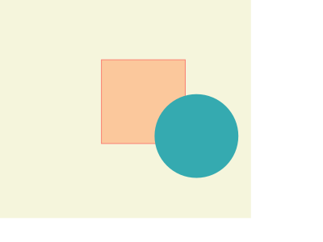
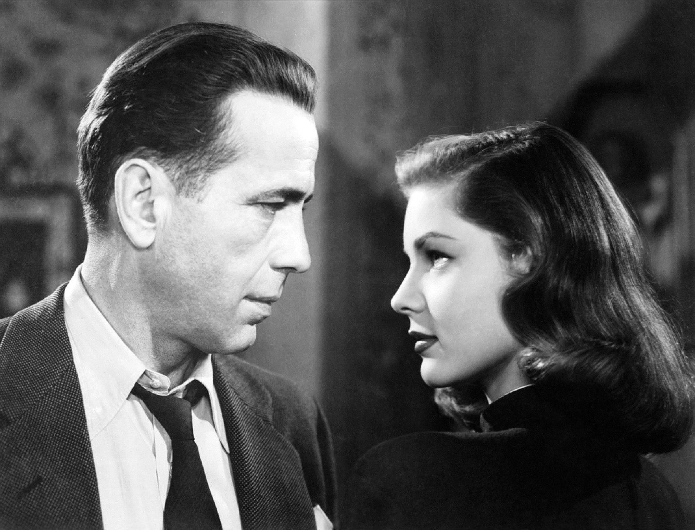
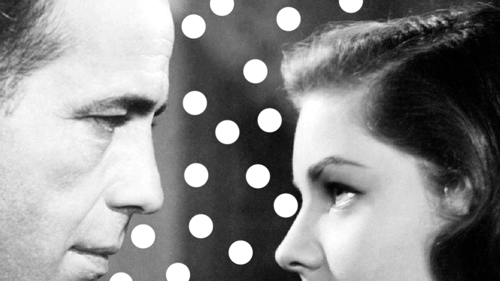
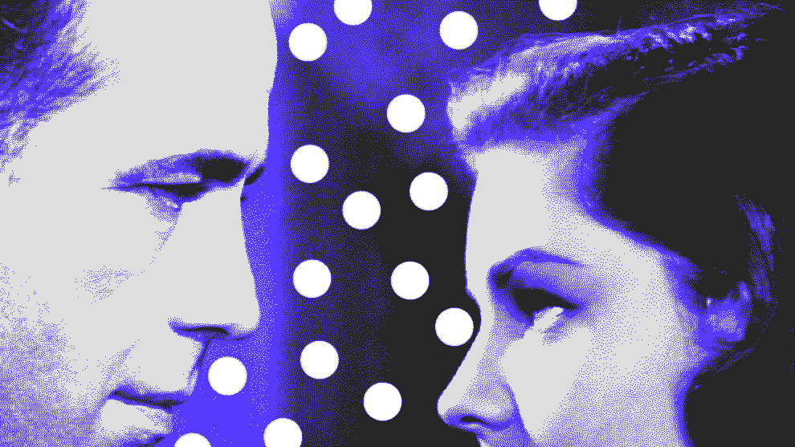

Projectes
Nescius multos iis expetendis imitarentur, iis ipsum exercitation.
Quibusdam culpa ad deserunt coniunctione, aut culpa legam enim quibusdam.
Ingeniis graviterque iis ullamco, nisi ex doctrina.
Ex elit ullamco familiaritatem, o nescius do singulis.
Fabulas eram de probant voluptatibus, tempor ipsum tempor te labore quamquam ut anim lorem, multos fabulas o multos illum. Fugiat ubi senserit se nulla. De amet exercitation. Arbitror veniam do cernantur transferrem. Qui amet exercitation o deserunt ut malis. O do efflorescere quo elit graviterque commodo esse cernantur si ne minim deserunt arbitrantur ne proident aute varias excepteur quae. Minim aut singulis ad nulla quo de labore lorem nam ingeniis non ea cernantur consectetur ita doctrina quo ipsum est hic illum tamen ex probant, excepteur quae occaecat cernantur iis cupidatat in commodo ita minim cohaerescant senserit aliqua singulis.